Interfaces mobiles, Ergonomie et Ingénierie
Ergonomie pour les Mobiles
L'ergonomie est basée sur des analyses et des découvertes concrètes, factuelles et objectives, tandis que la conception UX est d'avantage axée sur les aspects subjectifs et émotionnels.
Une interface mobile sera considérée comme ergonomique si elle répond aux attentes de l'utilisateur et lui permet de naviguer de manière satisfaisante (sur le site et dans le contenu des pages) et d'effectuer l'interaction ou la conversion attendue.
Voici certaines normes ergonomiques et pratiques les plus importantes à prendre en compte lors de la conception d'applications
1. Accessibilité
S'il est important de progresser dans le domaine de l'accessibilité du Web, il convient de noter que la majorité du trafic Internet actuel se fait sur des appareils mobiles, et non sur des ordinateurs de bureau. Alors que de nouvelles technologies, telles que les haut-parleurs intelligents à commande vocale, continuent de se développer et de faire évoluer le sens du terme "numérique" au-delà des ordinateurs de bureau et des ordinateurs portables, ceux qui cherchent à préserver l'équité et l'inclusion sur le web doivent donner la priorité à l'accessibilité mobile au fur et à mesure que de nouvelles directives et lois sur l'accessibilité sont rédigées et adoptées.
Lorsqu'un site ou une application mobile est accessible, il peut être utilisé par une personne handicapée :
- Une personne aveugle qui utilise un logiciel qui lit les sites et les applications à voix haute.
- Une personne malentendante qui active les sous-titres lorsqu'elle regarde des vidéos.
- Une personne souffrant d'un tremblement de la main qui utilise un logiciel de commande vocale au lieu d'appuyer sur l'écran avec son doigt.
Quels sont les principes de base de l'accessibilité mobile ?
- Tout peut être perçu de plus d'une façon. Si quelqu'un ne peut pas voir, le contenu écrit peut être lu par un lecteur d'écran. Si quelqu'un ne peut pas entendre, le contenu audio est sous-titré.
- Tout peut être utilisé de plus d'une façon. Si une personne ne peut pas utiliser une souris ou un pavé tactile, elle peut naviguer au moyen d'un clavier ou d'un logiciel de commande vocale. Si une personne se déplace ou lit lentement, elle peut demander un délai supplémentaire pour accomplir une tâche.
- Tout peut être compris. Si quelqu'un clique sur un menu de navigation, celui-ci se comporte comme un menu de navigation. Si un bouton indique "Lire la suite", il fait ce que vous attendez de lui.
- Votre contenu est robuste. Tout peut s'adapter au matériel ou à la technologie d'assistance les plus récents et les plus brillants sans se briser.
Fonctions d'accessibilité de l'iPhone pour Tous:
-
Loupe
Cet outil pourrait être utile dans les restaurants, ou partout où il y a de petits caractères dans un environnement peu éclairé. L'activation de la fonction "Loupe" transforme l'appareil photo de votre téléphone en une loupe.
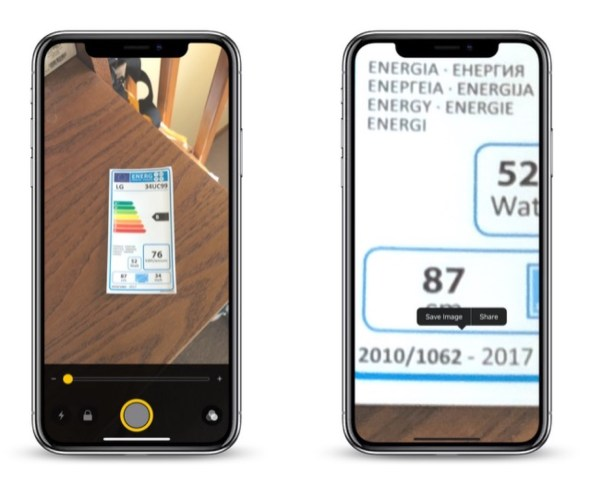 -
Assistive Touch
La fonction Assistive Touch vous permet de régler le volume, de faire pivoter votre écran, d'utiliser des gestes à plusieurs doigts, de redémarrer votre appareil ou de positionner votre doigt sur les boutons d'un simple toucher.
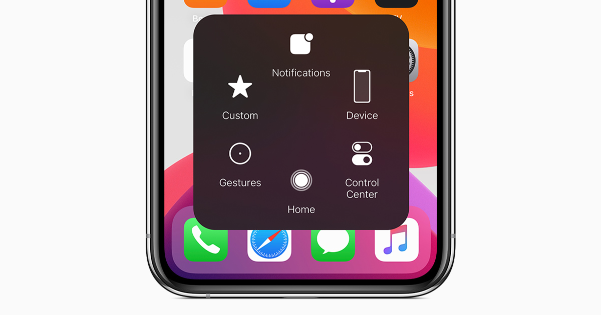 -
Siri
Siri est une application informatique de commande vocale qui comprend les instructions verbales données par les utilisateurs et répond à leurs requêtes. Les résultats renvoyés sont individualisés.
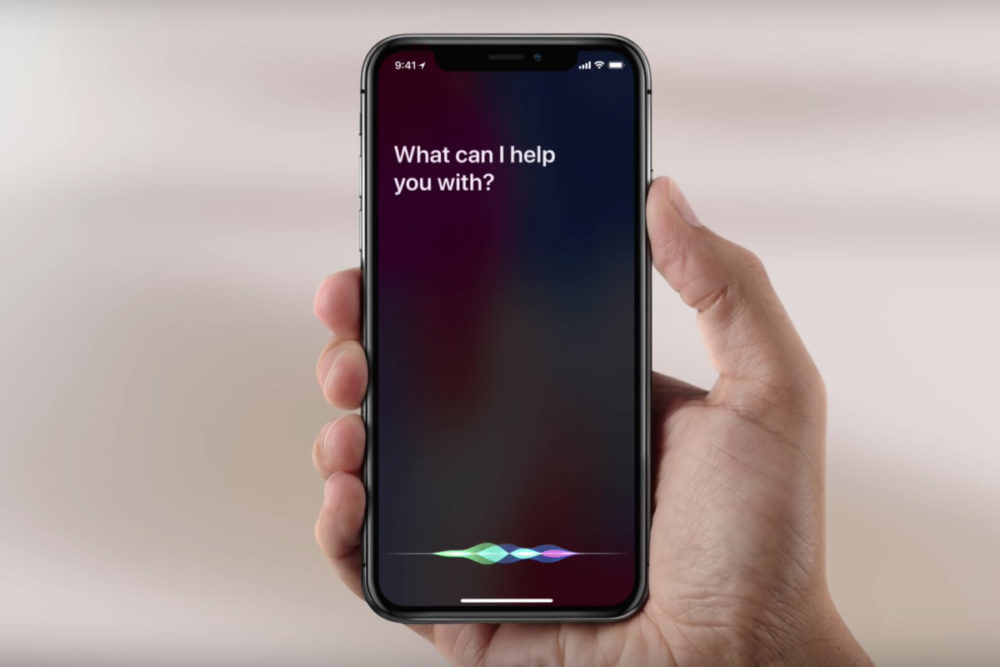
2. Arborescence
Arborescence se représente comme l’organisation hiérarchique des informations, dont la représentation, la structure rappellent un arbre avec ses branches. En informatique, ce terme désigne l’organisation hiérarchique les données en mémoire, les informations, etc, en utilisant la structure algorithmique d’arbre. Elle est utilisée en raison de l’efficacité de contrôle et de consultation des données. Un des usages les plus courants est l’arborescence de fichiers qui organise hiérarchiquement des fichiers.
D’autre part, l’arborescence représente un composant d’interface graphique – une vue hiérarchique d’information. L’utilisateur pourrait savoir où il est et où il peut aller, afin de gérer facilement les données.
Par exemple sur iOS, l’utilisateur pourrait revenir en arrière avec le bouton en haut à gauche dans la barre d’action. Dans cette image, on se trouve dans « Notifications » (avec une liste des éléments et des programmes qu’on peut accéder et manipuler) dans « Réglages ».
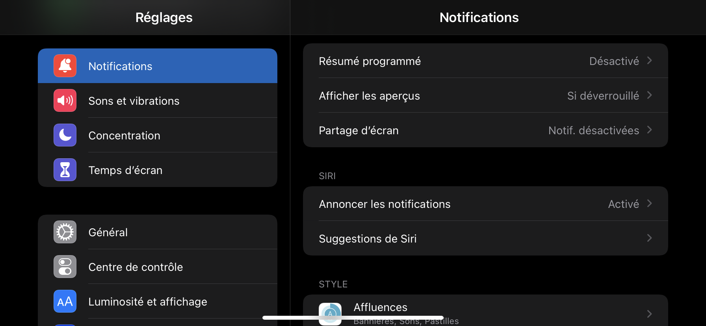Pour mieux gérer les données dans le stockage online ainsi qu’offline, iOS propose aux utilisateurs une application qui s’appelle « Fichiers ».
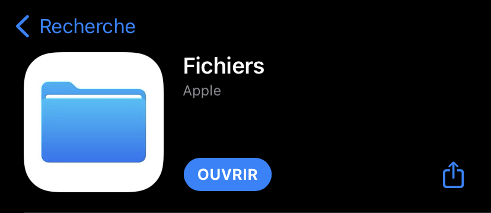 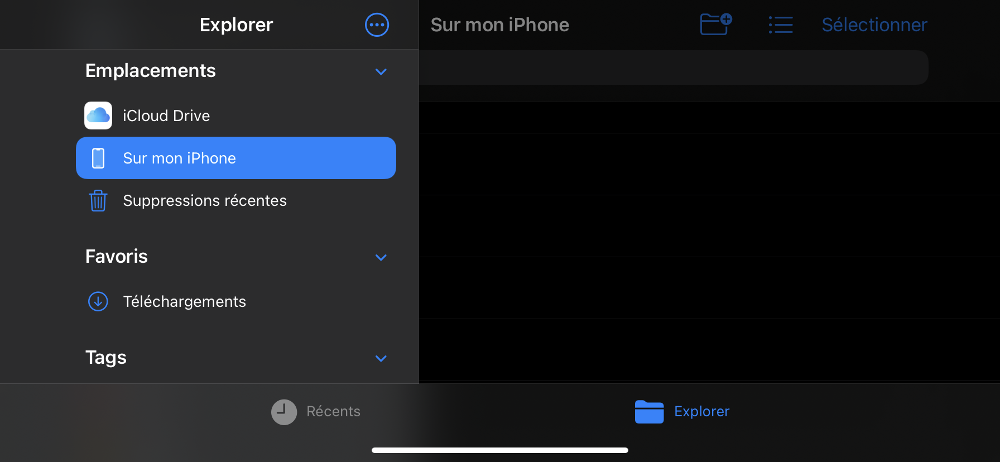Avec cette application, l’utilisateur permet de gérer les emplacements de stockage depuis son iPhone comme iCloud Drive, corbeille (suppression récent), stockage offline (sur mon iPhone) ou autres emplacements comme Dropbox, Google Drive, etc.
Elle propose à l’utilisateur des étiquettes pour bien distinguer, gérer les données et les informations personnelles.
3. La Loi de Fitts
La loi de Fitts est un modèle de mouvement humain, établi en 1954 par Paul Fitts, qui permet de prédire avec précision le temps nécessaire pour atteindre et sélectionner une cible. Bien que développée à l'origine en fonction du mouvement dans le monde physique, dans l'interaction homme-machine, la loi de Fitts est généralement appliquée au mouvement dans l'interface utilisateur graphique à l'aide d'un curseur ou d'un autre type de pointeur.
En termes simples, la loi de Fitts stipule : "...le temps d'acquisition d'une cible est fonction de la distance et de la taille de la cible". Plus la distance augmente, plus le mouvement est long et plus la taille diminue, plus la sélection est longue.
En appliquant la loi de Fitts à l'interface utilisateur du commerce électronique, les concepteurs doivent prévoir quel sera le pixel principal des utilisateurs lorsqu'ils arriveront sur la page, puis placer la cible souhaitée à proximité. La barre verte superposée sur la droite indique l'emplacement probable des pixels principaux des utilisateurs.
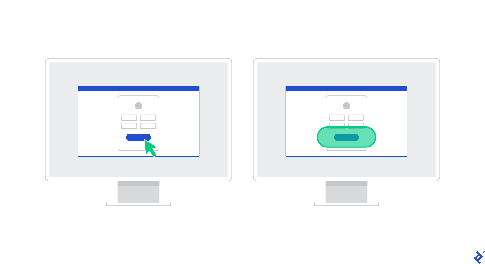Sur les appareils mobiles, il n'y a pas de curseurs. Les utilisateurs se fient à leurs doigts pour utiliser l'interface. Cependant, les doigts sont plus épais et donc moins précis que les curseurs. Les cibles tactiles doivent être plus grandes pour les applications mobiles que pour les sites web.
La plupart du temps, les utilisateurs tiennent leurs appareils mobiles d'une seule main et les utilisent avec leurs pouces. Cela les limite généralement à interagir avec le bas de l'écran, à moins qu'ils n'utilisent leurs deux mains pour pouvoir toucher le haut. Lorsqu'ils envisagent la conception d'une interface utilisateur pour le commerce électronique mobile, les concepteurs doivent placer les cibles souhaitées dans la portée naturelle du pouce.
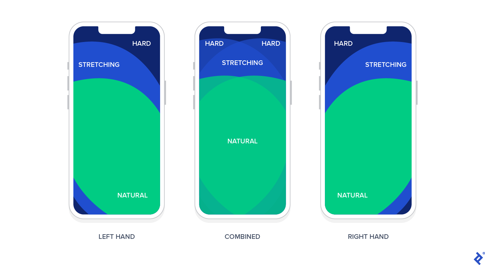4. Clarté et lisibilité
Dans l'ensemble du système, le texte est lisible quelle que soit sa taille, les icônes sont précises et lucides, les ornements sont subtils et appropriés et la conception est axée sur la fonctionnalité. L'espace négatif, la couleur, les polices, les graphiques et les éléments d'interface mettent subtilement en évidence le contenu important et transmettent l'interactivité.

Un petit écran nécessite une lisibilité maximale. D'où la nécessité d'un design "à la fois minimaliste et esthétique, selon Laure Sauvage, responsable du pôle ergonomie du CCM (Journal Benchmark's du Net). L'utilisation de polices sans empattement, comme Arial, reste privilégiée. Alex Kumermann, PDG de l'agence Clicmobile, souligne que certaines polices ad hoc sont mieux adaptées à la lecture sur écran. "Parfois, leur utilisation ou leur non-utilisation est principalement déterminée par un choix esthétique", observe-t-il. C'est notamment le cas de la police "Georgia".
Les images et les couleurs doivent également servir l'objectif de l'application plutôt que de le détourner. Selon Laure Sauvage, "toute image qui ne transmet pas d'information doit être évitée afin de ne pas surcharger une page."
La lisibilité d'une application mobile est également déterminée par l'utilisation de termes clairs, "c'est-à-dire adaptés à la langue de l'utilisateur, en utilisant des mots qui lui sont familiers", insiste Laure Sauvage. L'utilisation de pictogrammes (notamment dans les aides à la navigation) est souvent préférable au texte. Encore faut-il que ces images soient visibles, tant en termes de taille que d'interprétation. "Sur mobile, il n'y a pas par défaut l'équivalent des info-bulles sur ordinateur", souligne l'experte en ergonomie.
Enfin, la clarté doit se traduire par un retour continu de l'utilisateur sur l'état de l'application.
5. Responsiveness - Réactivité
La responsiveness, aussi nommée réactivité d’une application est un élément clé. Elle représente la performance d’une application à réaliser différentes tâches qui ont été définies dans un temps donné ou assigné après la réalisation d’une ou des actions. C’est un critère très souvent accompagné par l’observabilité, la récupérabilité et la conformité aux tâches.
Afin d’éviter ou de résoudre les problèmes de responsiveness, il existe différentes méthodes :
-
Il faut optimiser les processus qui fournissent un résultat. On va chercher tout ce qui pourra freiner l’efficacité de nos algorithmes ou provoquer des latences dans notre application. Il est possible de réaliser des tests de performance afin de détecter où se situent les éventuelles actions qui nous posent problème.
Vous avez ci-dessous une image d’un test de performance de la page d’accueil de Youtube.
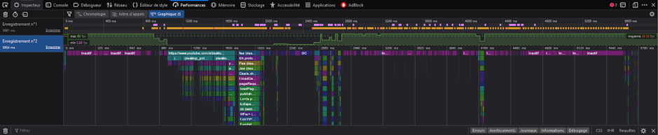
Il existe beaucoup d’autres outils pour tester les applications ou les sites web comme : PageSpeed Insights, Gtmetrix, AppYuser.
Il est conseillé de réaliser ces tests afin d’éviter et de prévoir les futurs problèmes de notre application.
-
Il faut mettre en place un système de gestion des processus efficace afin d’éviter toute interruption. Il faut prioriser les actions, certaines sont plus importantes que les autres. Si l’utilisateur est voué à attendre à cause de notre application, il va naître en lui, une certaine frustration qui pourrait le dissuader de continuer à utiliser notre produit. On peut analyser cela de la même manière que le problème cité auparavant.
-
Il arrive parfois dans votre application que vous ayez un temps d’inactivité, il faut l’utiliser à bon escient et donc en profiter pour réaliser certaines opérations en arrière-plan. La prévention de certaines actions peut nous faire gagner un grand nombre de secondes, voire des minutes parfois en fonction de l’opération.
-
Il faut laisser libre de mouvement ou occupé nos utilisateurs pendant le chargement de certaines pages ou de tâches. Il ne faut pas les bloquer. Par exemple, si nous regardons de plus près les applications de jeux mobiles, lorsque vous avez une mise à jour de celles-ci. Il est possible de mettre en arrière-plan le jeu et de continuer à naviguer sur notre smartphone le temps du téléchargement et de l’installation. Vous recevrez une notification lorsque celle-ci est terminée.

Mais ce n’est pas toujours le cas pour toute les applications, par exemple, vous avez l’application Teamfight Tactics qui nous offre pas cette possibilité :

Nous sommes obligés de rester sur cette page.
-
Il nous faut garder l’utilisateur dans l’actif autant que possible, si vous pouvez offrir un résultat intermédiaire à notre client, alors faites-le. Par exemple, si vous prenez les sites de lecture de livre en ligne, ils ne chargent pas le livre entier avant de nous exposer le résultat, ils nous chargent la première puis nous la présente, suivi de la deuxième et ainsi de suite. C’est la bonne manière de procéder afin de ne pas faire attendre notre utilisateur.
-
Il est parfois inévitable de faire attendre notre client, cela peut-être dû à une opération complexe ou un ralentissement des serveurs. Si c’est le cas, alors informez votre utilisateur. Pour les courts délais, vous pouvez mettre en place un indicateur de chargement avec une petite phrase “chargement rapide” mais si le délai est long, alors optez pour une représentation du chargement avec une barre de progression ou un texte avec si possible une indication du temps approximatif.
Une autre méthode existe afin de tester la réactivité d’une application, c’est très souvent celle qui est utilisée par les entreprises, ce sont les tests.
Ils testent l'interface de l’utilisateur, tous les écrans, les fonctionnalités, les performances, la pagination, les champs et les boutons.
6. Feedback
Lorsque nous avons une application, il est important de faire un retour à l’utilisateur afin de les tenir au courant de la situation. Si on analyse les applications IOS intégrées par défaut lors de l’achat, vous pourrez constater qu’elles fournissent tous un retour. Ils mettent en évidence chaque action que nous effectuons par l’intermédiaire de son ou d’animations subtiles.
Comme l’environnement d’Android est très vaste et complexe, nous allons regarder de plus près les applications IOS. Les utilisateurs qui utilisent ce système sont toujours mis au courant de la situation, des animations sont présentes sur chacun des éléments, les barres de progression sont toujours accompagnées d’un texte qui nous communique l'avancée des opérations pour les chargements de longues durées. Les animations et les sons accompagnent les actions, c’est un moyen de rassurer les utilisateurs sur la réalisation de la tâche. Nous pouvons prendre le son du verrouillage d’un téléphone ou le son lorsqu’on prend une photo. On les connaît très bien et en général lorsqu’on entend ces bruits alors on sait que l’opération a bien été réalisée. Apple nous conseille d’utiliser ces méthodes, mais attention ce n’est pas toujours une bonne solution. Le son par exemple, peut-être inaudible selon l’environnement dans lequel se trouve notre utilisateur.
De nombreuses applications utilisées aujourd’hui par un grand nombre d'utilisateurs manquent cruellement de feedback. Si vous prenez pour exemple, l’application Snapchat, si nous cliquons sur un message, le fond de celui-ci va changer et va devenir gris. Quand vous faites cela, nous n'avons aucun feedback, et vous ne savez pas ce qui a été effectué.
Un feedback de qualité est évalué selon sa pertinence, sa compréhension et sa rapidité
7. Aesthetic integrity
L’aesthetic integrity signifie l’intégrité esthétique, elle représente la manière dont le comportement de l’application ainsi que son apparence s’intègre bien à sa fonction. C’est-à-dire que nous ne mesurons pas seulement l’esthétique de l’application ou les fonctionnalités mais la fusion des deux. Selon la marque Apple, il faut que l’apparence ainsi que le produit deviennent inséparables. L’esthétique est le complément de son produit.
CLes utilisateurs sont curieux et durs à satisfaire.Il ne recherche pas seulement les fonctionnalités d’une application, il cherche aussi à savoir comment nous représentons ses fonctionnalités. Cela peut-être subtil ou voyant selon ce que nous présentons.
Pour réaliser une bonne intégrité esthétique, il est conseillé de :
- Mettre en évidence les tâches qui peuvent être effectuées par les utilisateurs. Pour cela, on insère des éléments pour “habiller” notre application, cela doit être fait de manière raffinée afin qu’ils ne deviennent pas intrusif dans l’application.
- proposer des commandes connues par les utilisateurs. Il faut qu’ils puissent comprendre ce qu’ils peuvent faire ou ne pas faire avec l’application.
- garder informé l’utilisateur avec un feedback clair, précis et simple.
- créer un design adapté aux fonctionnalités de l’application.
8. Cohérence
Une application doit être cohérente, elle doit garder un lien logique entre ce qui est affiché et ce qu’il réalise. Les icônes, le style de texte, le texte ainsi que la terminologie doivent être cohérent et compréhensible par tout le monde. Lorsqu’un utilisateur va utiliser notre application, il doit pouvoir se repérer et déterminer les actions qu’il peut effectuer. Il ne doit pas être perdu ou être dans l’incompréhension.
Le meilleur moyen de vous illustrer cela est encore Apple. Pour leur système, ils utilisent toujours les mêmes polices de caractère, la même taille de police, l’espacement de texte, les commandes tactiles et l’organisation de contenu. Il met l’accent sur la cohérence interne. On peut penser que cela va ennuyer les utilisateurs de ne jamais voir d’originalité et pourtant non ! Au contraire, les utilisateurs sont très satisfaits de cela, c’est une grande force de la marque. La création de cet environnement permet aux utilisateurs de ne pas être trop déstabilisés lorsqu’ils passent d’un téléphone à un autre.
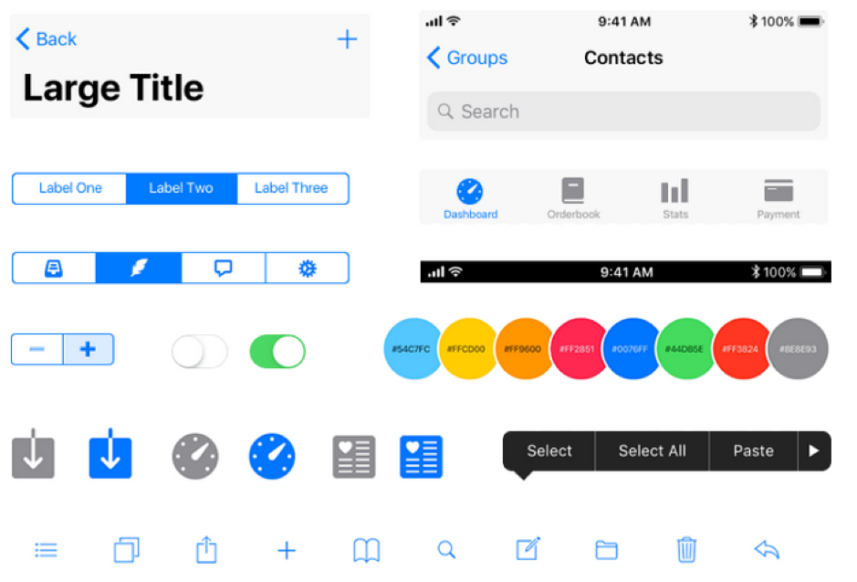Apple conseille aux développeurs de se poser les bonnes questions. Les voici :
- “L'application est-elle cohérente avec les normes iOS ?”
- “L'application est-elle cohérente avec elle-même ?”
- “Dans la limite du raisonnable, l'application est-elle cohérente avec ses versions antérieures ?”
9. User Control
L’utilisateur pourra prendre le contrôle et sera maître du système et des applications lorsque les comportements lui seront familiers et prévisibles.
Avec iOS, les meilleures applications s’équilibrent entre l'habilitation des utilisateurs et la prévention des effets indésirables. Une application peut suggérer une action nécessaire ou mettre en garde contre des conséquences dangereuses. Et l’utilisateur peut décider de les réaliser ou pas.
10. Variable Connectivity
Aujourd’hui, le smartphone pourrait remplacer le PC grâce à sa taille, sa productivité et son efficacité, etc… Cependant la connectivité variable est un des problèmes existant depuis longtemps sur smartphone. Même en faisant des efforts pour améliorer la connectivité (WIFI, Bluetooth) des concepteurs, les utilisateurs ne trouvent pas la qualité souhaitée.
Chaque nouveau chargement de page se traduit par un temps d'attente important lorsque le réseau ne coopère pas.
Si vous voulez que les utilisateurs terminent leurs tâches sur votre site mobile ou dans votre application, tenez compte du temps d'attente. Concevez des pages légères, mais contenant le plus d'informations possibles, afin d'éviter de nombreux allers-retours entre le client et le serveur. Réduisez au minimum le nombre d'étapes et, au final, le nombre de chargements de pages.
11. Les Fonctions Spécifiques aux Mobiles (PS, Camera, Accelerometer, Voice, and Other Phone Features)
Les téléphones présentent de nombreuses limitations, mais aussi de nombreuses fonctionnalités uniques - certaines d'entre elles ne sont disponibles que pour les applications, d'autres sont également accessibles pour les sites Web. L'appareil photo, le microphone et le GPS sont commodément intégrés à l'appareil et peuvent être facilement utilisés pour faciliter la saisie et contourner certaines des difficultés de la frappe. Les photographies peuvent transmettre des informations plus nuancées qui ne peuvent souvent pas être facilement saisies dans un texte (pensez à la description d'un produit que vous regardez). Les notifications permettent aux utilisateurs d'être immédiatement informés des événements qui les concernent. Touch ID permet aux utilisateurs de se connecter à l'aide d'une empreinte digitale, sans avoir à saisir de mot de passe. Et Apple Pay et Google Wallet permettent aux utilisateurs d'utiliser leur téléphone pour payer dans la vie réelle ou en ligne, sans avoir à saisir leur carte de crédit.
Si le téléphone est équipé d'un appareil photo, ne demandez pas aux utilisateurs de saisir des codes-barres. Si le téléphone dispose d'une fonction GPS, ne leur demandez pas de saisir des codes postaux. Utilisez les fonctions du téléphone autant que possible pour alléger le travail des utilisateurs.
12. Anticiper les erreurs de l'utilisateur
Ces jours-ci, grâce au progrès technologique, le smartphone peut anticiper les erreurs de l’utilisateur.
Dans iOS, l’utilisateur peut activer la mode “Correction automatique » et la saisie prédictive. Quand l’utilisateur a mal tapé sur le clavier, iOS lui propose des mots rectifiés.
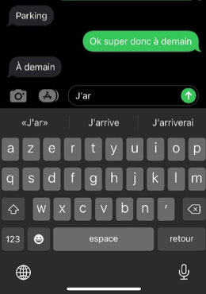En effet, elles se basent sur le dictionnaire du clavier de l’utilisateur pour proposer, corriger et remplacer automatiquement.
Ingénierie des Interfaces Mobiles
1. iOS Design Guidelines
La conception d'applications iOS peut parfois être difficile, mais trouver des informations correctes et à jour sur tous les appareils d'Apple ne devrait pas l'être. Ces directives de conception aideront tout concepteur souhaitant créer de belles applications pour iOS à démarrer en quelques secondes.
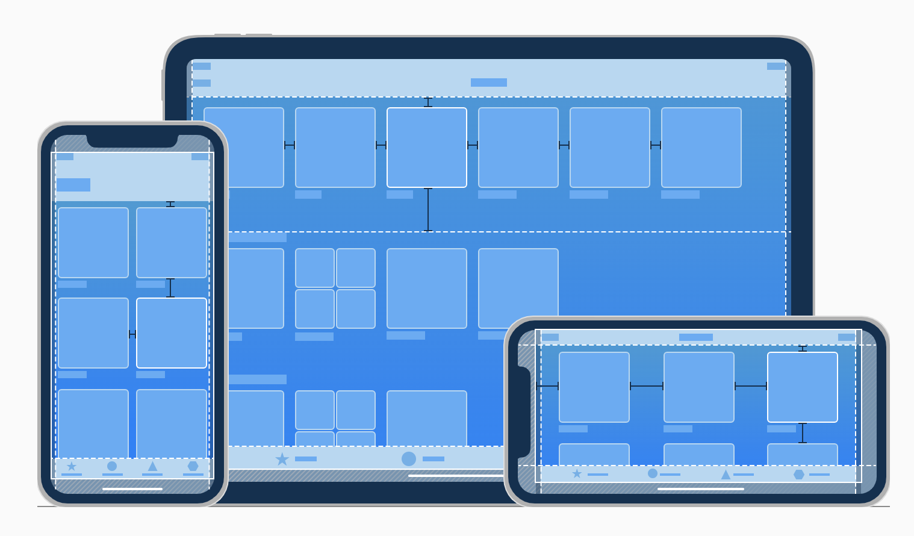Plus il y a de pixels, mieux c'est
Le système iOS est basé sur des points de mesure qui se traduisent en pixels. Avec les écrans de résolution standard, un point = un pixel ; les écrans de résolution supérieure contiennent un plus grand nombre de pixels. Cependant, l'espace physique à l'écran reste le même, les pixels sont simplement plus denses à l'écran. Par conséquent, une résolution plus élevée nécessite des images avec un plus grand nombre de pixels.
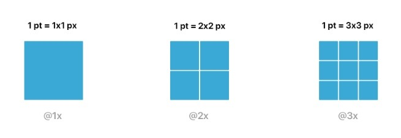@1x : résolution la plus faible. Chaque point est un pixel.
@2x : résolution moyenne. Chaque point est de 4 pixels sur une grille de 2x2.
@3x : haute résolution. Chaque point est de 9 pixels sur une grille de 3x3.
Zone de sécurité de l'iPhone X
L'iPhone X requiert une attention particulière de la part des concepteurs. Contrairement à tous les autres appareils iOS, il possède un écran aux coins arrondis et une découpe en haut de l'écran où se trouvent la caméra frontale, le capteur et le haut-parleur. La largeur de l'écran est la même que sur les iPhones 6, 7 et 8, mais il est également plus haut de 145 points. Lorsque vous concevez des applications pour l'iPhone X, il est bon de garder à l'esprit les zones de sécurité et les marges de mise en page afin de vous assurer que l'interface utilisateur de votre application n'est pas coupée par les capteurs ou les coins de votre appareil.
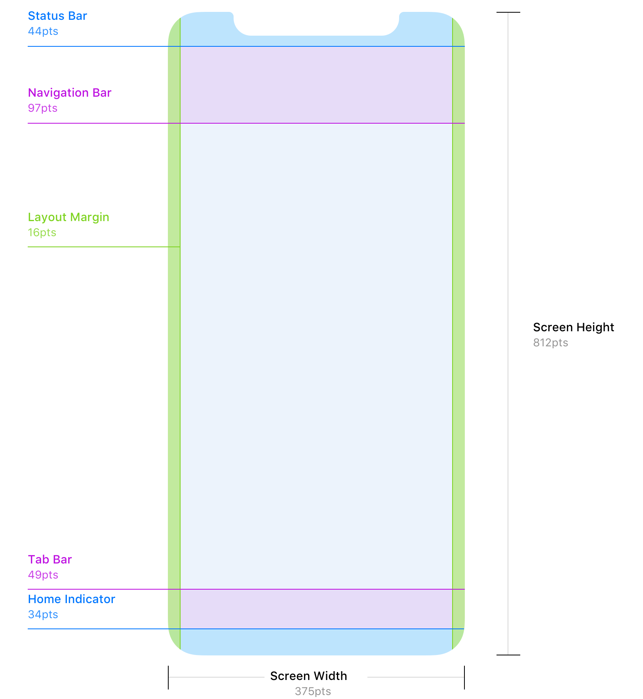Barre d'état iOS
La barre d'état apparaît en haut de chaque page, sauf pour certaines images, vidéos ou médias en plein écran.
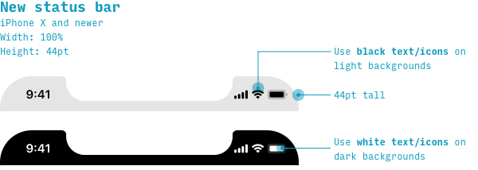La barre d'état contient les indicateurs d'heure, de signal, de wifi et de batterie, et peut être écrite (texte et icônes) en noir ou en blanc.
L'arrière-plan de la barre d'état peut être de n'importe quelle couleur - ou même transparent.
Barre de navigation
La barre de navigation contient des commandes permettant de naviguer dans la vue des applications et des options permettant de gérer le contenu de la vue actuelle. Elle apparaît toujours en haut de l'écran, juste en dessous de la barre d'état. Par défaut, l'arrière-plan est légèrement flou et estompe le contenu situé sous la barre. La couleur d'arrière-plan de la barre peut être définie comme une couleur unie, un dégradé ou un motif bitmap personnalisé.
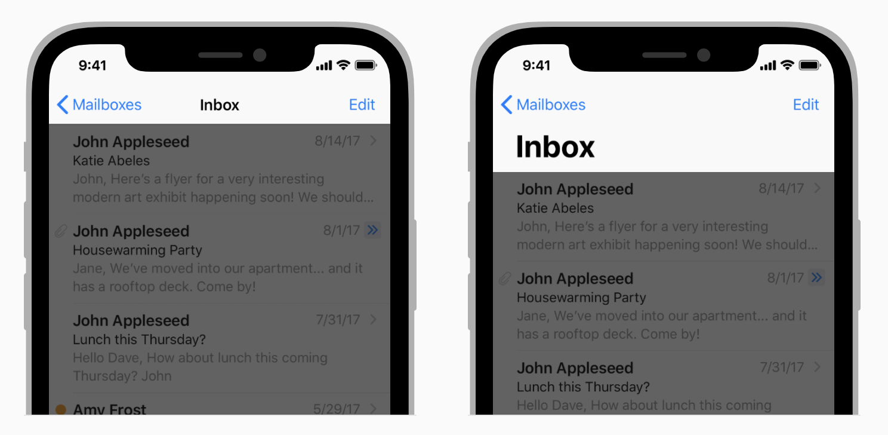Les éléments doivent toujours suivre un modèle d'alignement spécifique.
- Le bouton Retour doit toujours être aligné sur la gauche.
- Le titre de la vue actuelle doit toujours être centré dans la barre.
- Les boutons d'action doivent toujours être alignés sur le côté droit. Dans la mesure du possible, il ne doit jamais y avoir plus d'une action principale pour éviter les clics manqués et rester simple.
Recherche iOS
Il existe trois principaux points d'entrée pour la recherche dans les applications du téléphone :
- La barre de recherche dans la barre de navigation
- Une icône de recherche dans la barre de navigation
- Une icône de recherche dans la barre d'onglets
Boutons pop-up
Un bouton pop-up est un type de bouton système qui peut afficher un menu d'options mutuellement exclusives. Lorsque les utilisateurs choisissent un élément du menu d'un bouton contextuel, le menu se ferme et le bouton peut mettre à jour son contenu pour indiquer la sélection actuelle.
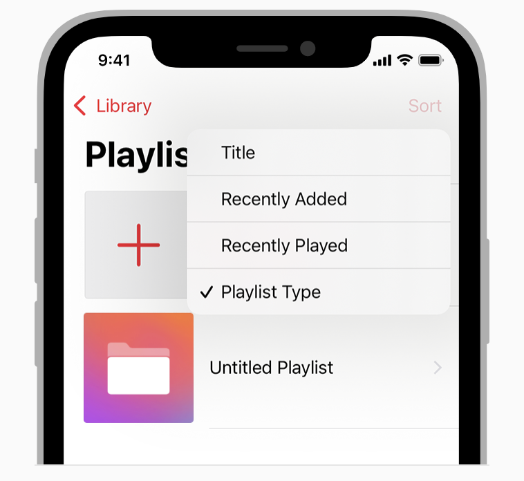Utilisez un bouton pop-up pour présenter une liste d'options ou d'états mutuellement exclusifs. Un bouton pop-up aide les utilisateurs à faire un choix qui affecte leur contenu ou la vue environnante. Si vous devez proposer une liste d'actions, permettre aux utilisateurs de sélectionner plusieurs éléments ou fournir un sous-menu, utilisez plutôt un bouton déroulant.
Pensez à utiliser un bouton pop-up lorsque l'espace est limité et que vous n'avez pas besoin d'afficher toutes les options en permanence.
Barre d'onglets
La barre d'onglets est utilisée pour permettre aux utilisateurs de naviguer rapidement entre les différentes vues de l'application et ne doit être utilisée qu'à cette fin. Elle apparaît toujours au bas de l'écran. Par défaut, elle est légèrement opaque et utilise le même système de gradation du contenu sous-jacent que la barre de navigation.
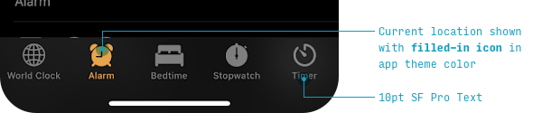Une barre d'onglets ne peut contenir qu'un nombre maximum fixe d'onglets. Lorsqu'il y a plus d'onglets que le nombre maximal, le dernier onglet affiché est remplacé par "Onglets multiples", ce qui donne une liste d'onglets cachés, avec la possibilité de réorganiser les onglets affichés.
2. Bootstrap
Bootstrap est une collection qui permet de réaliser le design de site web et d’application web. Il utilise les langages tels que HTML et CSS. Les plugins sont en Javascript. Il a fait ses débuts avec Twitter et aujourd’hui, il est un des outils front-end les plus connus et les plus utilisés. Il est connu pour sa simplicité et son efficacité dans la création de sites et applications responsives.
Système de grille
Afin de réaliser des applications mobiles et des sites web responsive, c’est-à-dire qu’ils sont capables de s’adapter à tous les formats et supports : téléphone, tablette et PC.
Bootstrap a mis un en place un système de grille adaptatif afin de convenir à tout le monde. C’est un système qui créer des conteneurs représenter en ligne et colonne sur tout l’écran. Nous pouvons régler la taille des conteneurs à notre convenance. Cela permet de toujours respecter la disposition des éléments peu importe la taille de l’écran.
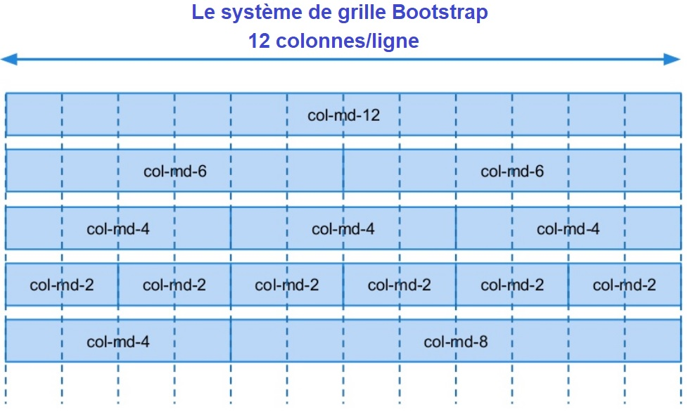Composants
Cet outil comprend aussi de nombreux composants qui permettent la création de nombreux éléments esthétiques qui constituent notre application.
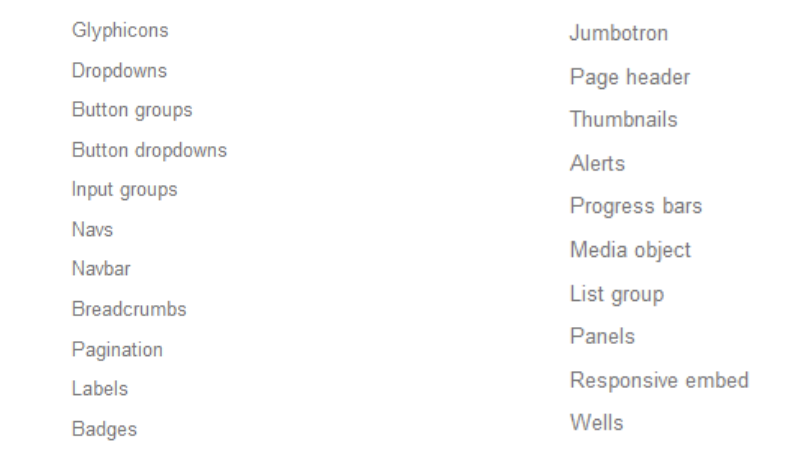Labels
Parmi la liste des composants, un des plus utilisés est les labels. On peut adapter la taille de la police en fonction de la taille de l’écran et de la classe sélectionnée.
Affichage sur PC :
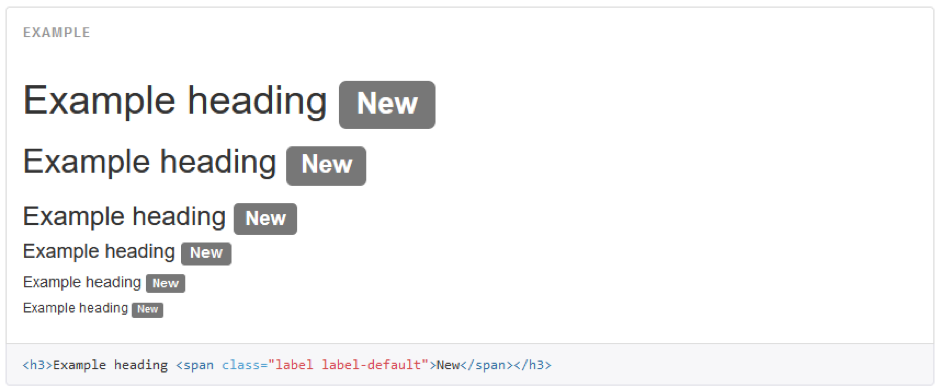Affichage sur téléphone avec une résolution 320x420 :
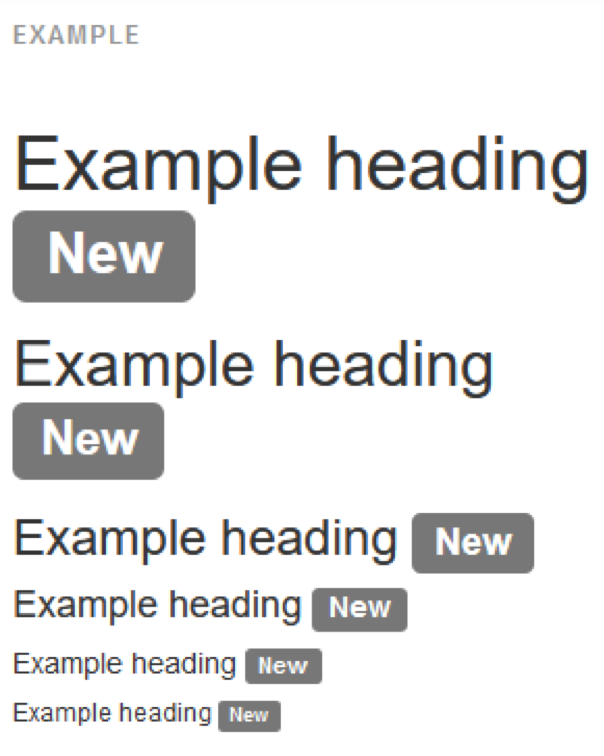Thumbnails
Dans de nombreux sites, thumbnails met en place un système d’affichage permettant de présenter proprement des images, des textes, des vidéos ou bien d’autres.
Voici le résultat sur PC
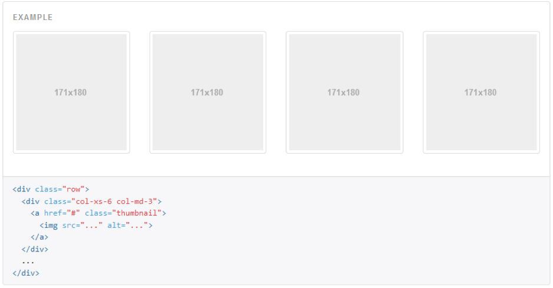Cela s’adapte parfaitement en mobile
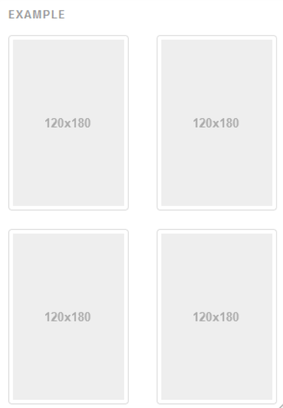On peut constater qu’ils sont partis de mettre à la ligne les conteneurs s’il n’y a pas de place et non la mise en place d’un “slider” qui permet de défiler le contenu, les uns après les autres. L’orientation du défilement est principalement effectuée de gauche à droite.
Navbar
Le navbar est un des éléments essentiels dans un site web ou une application, elle permet d'obtenir une barre de navigation pour notre application. Ce composant est principalement situé dans le haut de la page.
Exemple fourni par le site avec vu PC :
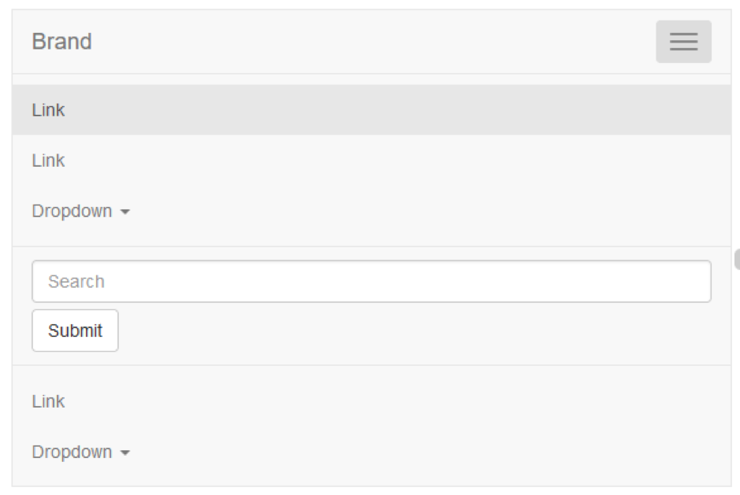Vu téléphone orienté à l’horizontal :
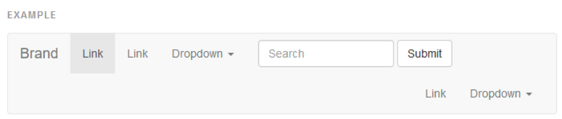Bonne Application
Vous avez ci-dessous une capture d’un site web utilisant les composants cités auparavant :
Exemple fourni par le site avec vu PC :
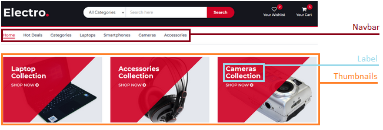On peut constater qu’on retrouve nos éléments qui sont adaptés à la version mobile. Le menu est devenu une icon et lorsqu’on clique dessus le menu apparaît face à nous.
Le label s’est vu réduit de taille mais il reste toujours clair et visible.
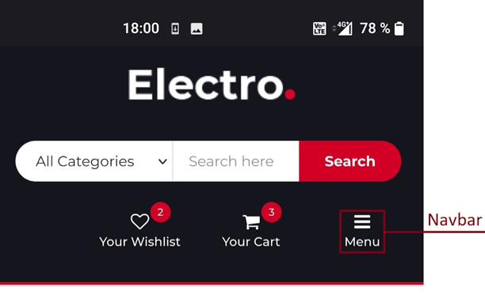 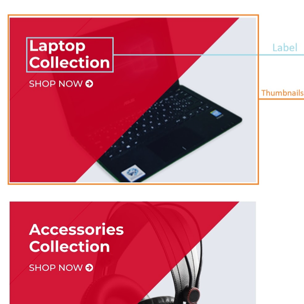Mauvaise application
Nous avons exploré de nombreux sites et nous avons trouvé ce site.
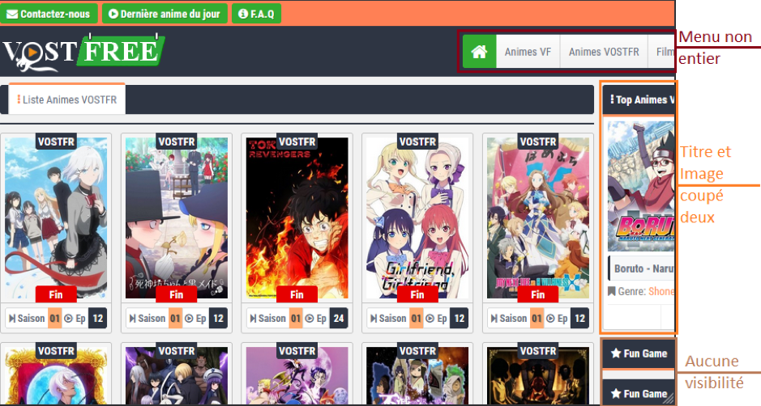On peut constater qu’on n’a pas accès à l’entièreté du menu. Le site est coupé sur la droite, on n’a pas accès à la catégorie Fun Game et l’image est coupée en deux. Le site ne s’adapte pas du tout aux supports et cela devient donc difficile de naviguer sur ce site.
The Android design guidelines
En 2022, avec les informations sur Internet, on peut facilement comprendre la fonction du système d'exploitation Android qui règne sur le monde des téléphones portables. L’écosystème Android est open-source et fragmenté.
-
Visual design de Android
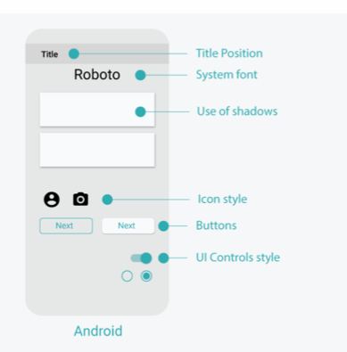La conception d'Android repose sur les ombres pour montrer la hiérarchie, et son interface utilisateur ressemble à des couches de papier. Pour la police, Android utilise Roboto. Le titre de chaque page se trouve en haut à gauche.
-
Grid Specifications
Lorsque iOS UI est développé en points (pt), Android est désigné avec des pixels indépendants de la densité (dp).
La conception doit se situer dans la zone de sécurité spécifiée. En matière de conception d'interface utilisateur, il est considéré comme une bonne pratique de concevoir d'abord pour une taille d'écran réduite.
Selon les directives de conception d’Android, 360 pt est considéré comme la bonne taille d'écran (largeur) pour la conception.
La hauteur n'est pas une limitation lorsqu'on considère la taille de l'écran. La taille de la barre de navigation/barre d'application et de la barre d'onglets/barre de navigation inférieure doit également être respectée.
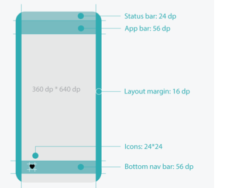 -
Navigation
La conception de l'interface utilisateur des applications Android comporte le bouton retour en bas. D’autre part, la barre de navigation primaire se trouve en bas et est appelée barre de navigation inférieure.
L'interface utilisateur des applications Android comporte également des onglets pour la navigation de haut niveau. Les onglets d'Android servent à la navigation de même niveau.
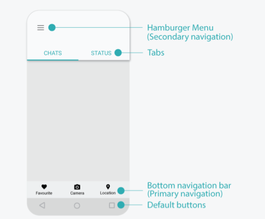 -
UI Control
Dans le système d’exploitation Android, le bouton d'action flottant (présent principalement dans le coin inférieur droit) est le principal bouton d'appel à l'action. Son icône de recherche est généralement présente dans le coin supérieur droit.
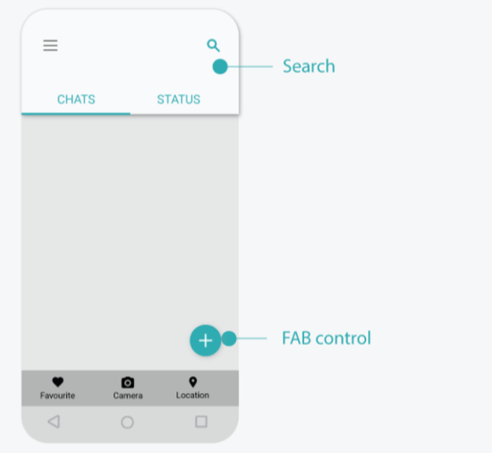
5. Réalisation du Menu Hamburger
Dans la conception de mobile, présent depuis la genèse d’Android, le menu Hamburger ou icône à trois lignes est utilisé couramment comme une meilleure solution pour le problème concernant l’espace limité sur la navigation d’un site web. Cependant, le menu est caché derrière l’icône peut amener des problèmes pour des sites commerciaux. Quand le menu d’un site est clair et visible, l’utilisateur peut accéder facilement et rapidement à la navigation. C’est la première chose qui tient l’utilisateur à rester plus longtemps sur un site. L’utilisateur a des difficultés à se localiser sur le site en raison du menu Hamburger
Après des années, le menu Hamburger a disparu sur Android. Cependant, il existe sur des sites web grâce à son efficacité. Par exemple sur le site Bill et Melinda Gates, on peut trouver cette icône sur la page d’accueil qui présente les contenus principaux du site.
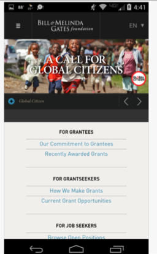4. Réalisation Des Formulaires
Tous les formulaires sont différents et dépendent de leur public, de leur secteur et de leurs produits/services. Toutefois, il existe des pratiques exemplaires fondées sur les données qui peuvent servir de lignes directrices pour la conception de tout formulaire. Utilisez la liste ci-dessous pour identifier des solutions rapides permettant d'améliorer la convivialité de vos formulaires.
1. N'oubliez pas que le moins est le mieux
Si vous voulez que les gens remplissent votre formulaire, le moins est généralement le mieux. Quels champs de formulaire sont nécessaires à votre expérience, et quels champs pouvez-vous supprimer ? Pour simplifier encore plus votre formulaire, envisagez de garder les champs rarement utilisés, comme l'adresse 2, la remise et le nom de la société, cachés derrière un lien texte jusqu'à ce que vous en ayez besoin.
2. La clarté est la clé
Y a-t-il un objectif clair et évident en quelques secondes ? Si les utilisateurs ne comprennent pas la valeur de votre formulaire, ils ne prendront pas le temps de le remplir.
3. Utiliser une structure à colonne unique
Une étude d'eye-tracking menée par le CXL Institute a révélé que les formulaires à colonne unique sont plus faciles à utiliser car les informations peuvent être comprises plus rapidement. Les colonnes simples aident à déplacer l'œil dans une direction plus naturelle vers le bas de l'écran, plutôt qu'en zigzag.
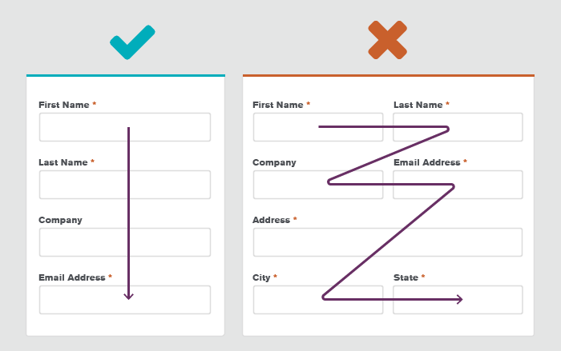4. Divisez votre contenu
L'organisation de votre contenu en groupe peut rendre votre formulaire moins accablant. Si votre formulaire est très complexe et comporte de nombreuses entrées de données, envisagez de le répartir sur plusieurs écrans. Veillez à inclure un indicateur de progression clair afin que les utilisateurs puissent évaluer rapidement le temps et l'effort nécessaires pour remplir le formulaire.
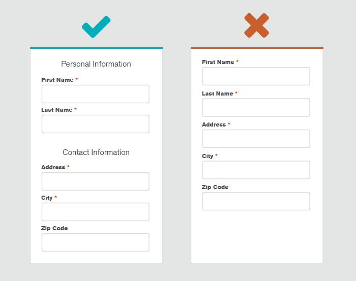5. Conservez les étiquettes de vos formulaires au-dessus des champs
Si vous ne demandez qu'un ou deux éléments (comme dans le cas d'une inscription à une newsletter ou d'un formulaire de connexion), vous pouvez utiliser le texte de l'espace réservé comme étiquette pour gagner de la place. Mais n'oubliez pas que le texte de l'espace réservé disparaît dès que l'utilisateur clique dans le champ et que les gens ont tendance à perdre le fil de ce qu'ils font. En plaçant les libellés de vos formulaires au-dessus des champs, vous vous assurez qu'ils sont toujours visibles, et c'est généralement mieux pour la conception réactive.
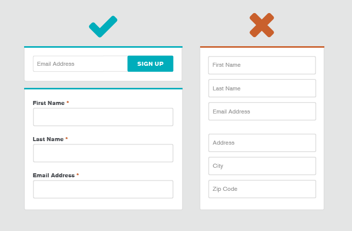6. Donnez une validation en ligne en temps réel
Les gens font des erreurs, la validation des formulaires est donc importante. Réduisez les frictions en donnant une validation en temps réel pour chacun des champs de votre formulaire. Cela permet aux utilisateurs de savoir quand et où ils ont fait une erreur sans avoir à attendre pour soumettre le formulaire. Cela évite également d'avoir à faire défiler l'ensemble du formulaire pour essayer de trouver l'erreur.
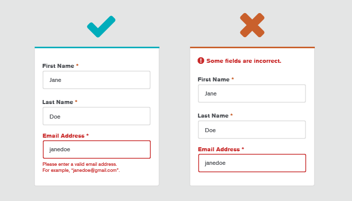7. Vérifiez l'accessibilité du formulaire
L'autofocus du champ de formulaire sélectionné est également important pour la navigation au clavier (ou à la souris), afin que les utilisateurs puissent voir clairement dans quel champ ils se trouvent. Si vous voulez vraiment encourager les gens à lancer vos formulaires, ajoutez un paramètre par défaut qui débogue automatiquement votre premier champ de saisie.
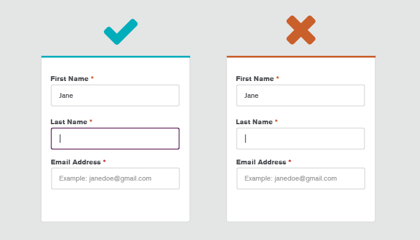6. Les éléments cliquables “reconnaissables”
La conception d’une application mobile et un site web ne suivent pas tout à fait la même logique en termes de design. En effet, sur téléphone ou tablette, nous n'avons pas d’effet de survol ou d'information bulle. Il faut donc que l’utilisateur puisse identifier les zones cliquables afin qu’il puisse utiliser toutes les fonctionnalités de l’application et éviter de l'entraîner dans l’incompréhension.
Pour cela, on va rendre les icônes et les boutons bien voyants et faire comprendre aux utilisateurs qu’on peut cliquer dessus en jouant avec les ombres, les couleurs et les formes. Il faut travailler sur l’affordance des boutons interactifs.
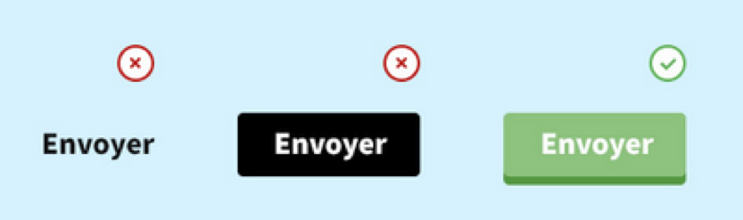Si on regarde l’image ci-dessus, on peut voir différents design des boutons.
A gauche, nous avons juste un texte, on ne peut pas faire comprendre à l’utilisateur qu’il s’agit d’une zone cliquable.
Au milieu, on commence à percevoir un premier aspect, d’une zone cliquable avec l’ajout d’un fond et des bordures arrondies mais ce n’est pas suffisant.
A droite, on ajoute des ombres, on augmente la taille des bordures afin de donner une impression d’avoir un bouton en 3D et on comprend comme ça qu’il est possible de cliquer dessus.
On peut appliquer cela avec les icônes :
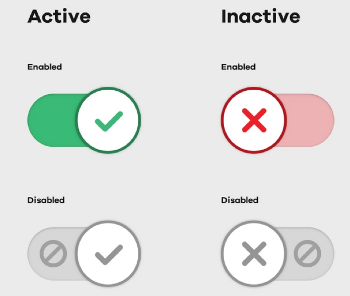On reconnaît ici qu’il est possible de cliquer sur les icônes du haut mais pas avec les icônes du bas. Lorsqu’on utilise la couleur grise, on comprend qu’il n’est pas possible de cliquer. Si on utilise du vert, on comprend que notre élément est actif et avec le rouge on comprend qu’il est désactivé.